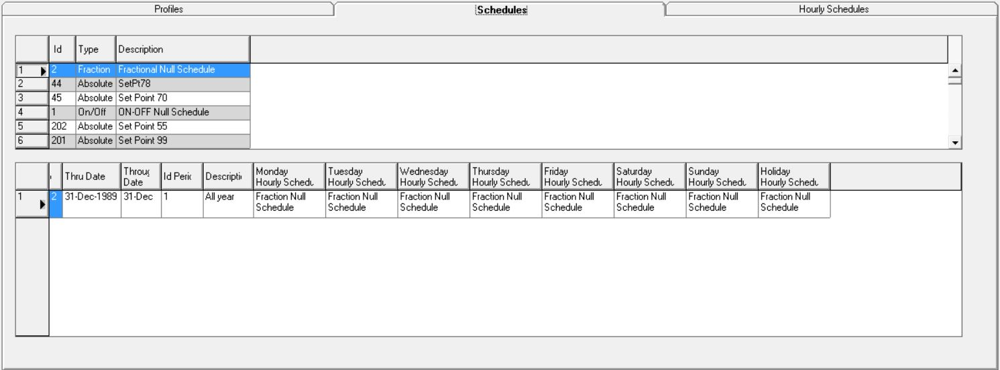

Profiles and Schedules
|
Profiles and Schedules |
EnergyGauge Summit allows user created profiles and schedules for all non-code type simulations. For code calculations, default schedules and profiles, as required by the particular standard will be used.
Profiles are assigned directly to zones or the building and they consist of individual annual schedules for all the following inputs:
There is a Master library for profiles and schedules and a Project library for each individual project. The Master library can be accessed from the ‘Resources’ whereas the Project library can be accessed from the ‘Edit’ menu option. A user can add a profile or a schedule from the Master library to the Project library of a new profile or schedule can be specified by the user in the Project library. The Master and Project libraries are shows in figures 1 and 2 below, respectively.


Right clicking in the first input box allows the addition of a new profile to the Project library. If this profile is from the Master library, all the default annual schedules for that profile for the sub-categories mentioned above will be added to the Project library. The user can then assign this profile to a particular zone or to the entire building. The user can also choose to make changes to this profile by replacing or modifying the annual schedules from the selected profile.
Annual Schedules:
Each annual schedule for people or lighting or equipment or other sub-categories mentioned above, consists of periods for a single year. The user can have as many periods in the year as required, so long as there is no duplication or overlapping and the starting date of one period is January 1 and the end date is December 31. Figure 3 below shows the addition of periods to an annual schedule.
Periods:

Each period in an annual schedule consists of an hourly schedule for each day of the week and a holiday that might be included in that year. Figure 4 below, shows the addition of an hourly schedule to the Project Profiles and Schedules library.
Hourly Schedules:

An hourly schedule consists of a fractional, on-off or absolute value for every hour of a 24 hour period that forms part of the period which is included in the annual schedule. If the profile is added from the Master library, the user can change the values of the hourly schedules and the start and end dates of the periods for the annual schedules in the Project Library or may add their own profiles and annual and hourly schedules for those profiles and assign them to their respective zones or the building.